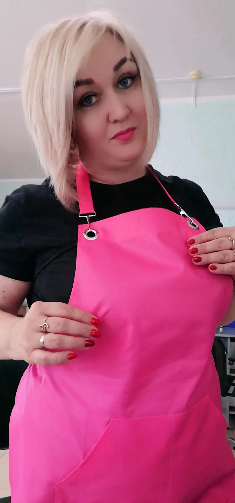

Парикмахер-стилист в г. Смолевичи • Эксперт по колорированию ESTEL
Записаться на процедуруПриветствую! Меня зовут Алеся Щербак. Я дипломированный парикмахер-стилист, безумно влюбленный в свое дело.
Специализируюсь на создании чистых блондов, трендовых техниках окрашивания и индивидуальном подборе стрижек. Регулярно прохожу обучение в академии Estel Belarus (Минск), чтобы предлагать вам только лучшие и безопасные решения для ваших волос.

Airtouch, балаяж, шатуш, мелирование и выход из темного цвета без потери качества.
Создание идеального тотал-блонда, пастельное тонирование в персиковые и платиновые тона.
Женские и мужские стрижки любой сложности с учетом формы лица и структуры волос.
Глубокие восстанавливающие процедуры для укрепления волос после осветления.
Работаю исключительно на проверенных сертифицированных материалах ESTEL PRO.
Всегда провожу диагностику волос и подбираю технику, которая сбережет их здоровье.
Каждого клиента ждет внимательное отношение, комфортная атмосфера и чашечка чая.